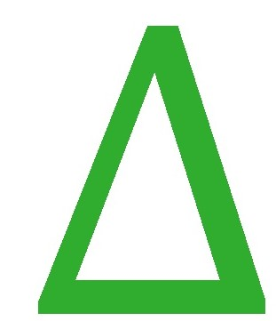

Teaching and Interacting on the Board. The Strategy:
The often two dimensional layout of mathematical formulas makes it difficult to reassemble it from a linear word stream alone. Similarly, due to the larger number of occurring symbols, lack of dictionaries, etc. the handwriting recognition problem for mathematics is significantly harder than for regular text.
The main objective of our project will be to develop a workflow that:
- uses glass to record video and audio stream of a teacher's writing of mathematical formulas on a whiteboard together with their explanation
- performs formula recognition on the video stream
- enhances the recognition process by using the results of speech recognition of the audio stream
- translates the recognition results into Braille output that can be sent directly to Braille displays used by students in the classroom
For the image recognition, we will exploit our work on whiteboard formula recognition, which uses still images to reconstruct stroke patterns and passes these to an online maths recognition engine. This data can now be augmented with online data directly obtained from video capture of glass's camera.